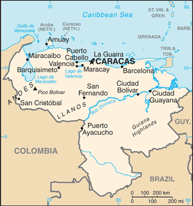

| Quick Facts | Home | Pictures | Information |
| Venezuela is a nation that occupies a roughly
triangular territory near the northernmost point of South America. It is
bordered by the Atlantic and Caribbean Seas. These are some fundamental
details about Venezuela: |
| Geography:
Venezuela is a physiographically diverse country that includes the vast
Llanos (plains) of the Orinoco River basin, the largest lake in South
America, Lake Maracaibo, the stunning Angel Falls, the highest waterfall
in the world, and the northern Andean mountain chains and interior
highlands. With a total size of 916,445 square kilometres, it is the
33rd biggest nation in the world. Learn More about the Geography... Population: 30.5 million people are predicted to live in Venezuela as of 2023. Three million people live in Caracas, the nation's capital. Learn More about the Population... Language: The official language of Venezuela is Spanish. Learn More about the Languages... Government: Venezuela is a federal presidential republic under a centralized authoritarian state. The current president is Nicolás Maduro. Learn More about the Government... |
 |
| Economy: Venezuela possesses enormous reserves of gold, coal,
iron ore, bauxite, and some of the greatest proven oil deposits in the
world. Nonetheless, the nation suffers from a high rate of urban
poverty, a huge foreign debt, and pervasive corruption and official
cronyism. Venezuela has had some of the highest rates of inflation in
the world in recent years. Learn More about the Economy... |
| Culture:
Venezuela boasts remarkable natural beauty, with 43 national parks
covering 15% of its total geographical area. It is renowned for both its
breathtaking waterfalls and some of the most stunning ladies on the
planet. The Carib, Arawak, and Chibcha peoples are some of the
indigenous populations that inhabited the area that is now Venezuela
around 15,000 years ago. Learn More about the Cultures... |
| History: Gran Colombia collapsed in 1830, leaving three nations
in its wake, including Venezuela. Strongmen from the armed forces
dominated Venezuela throughout the majority of the first half of the
20th century. They supported the oil sector and permitted a few social
changes. Since 1959, all administrations have been democratically
chosen. Learn More about the History... |